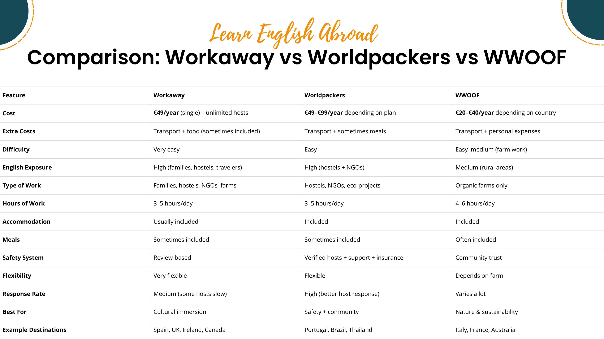
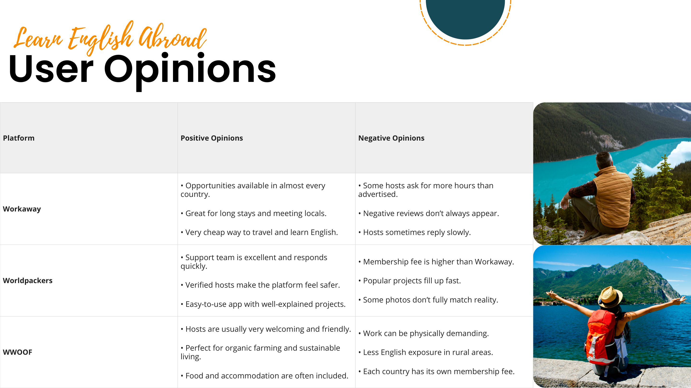
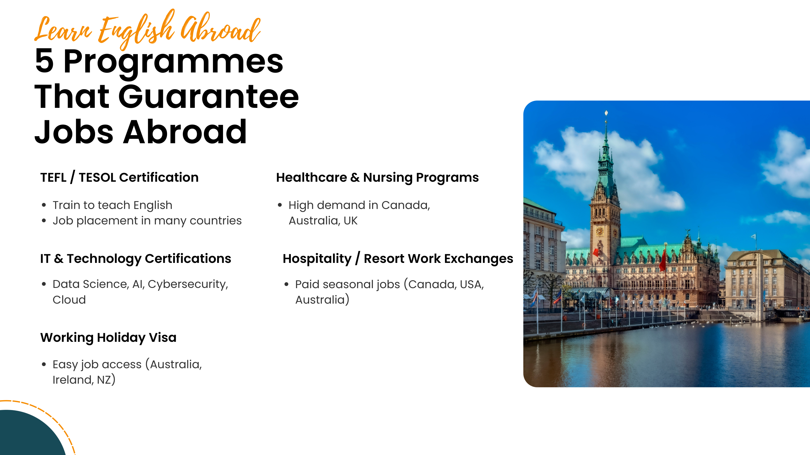
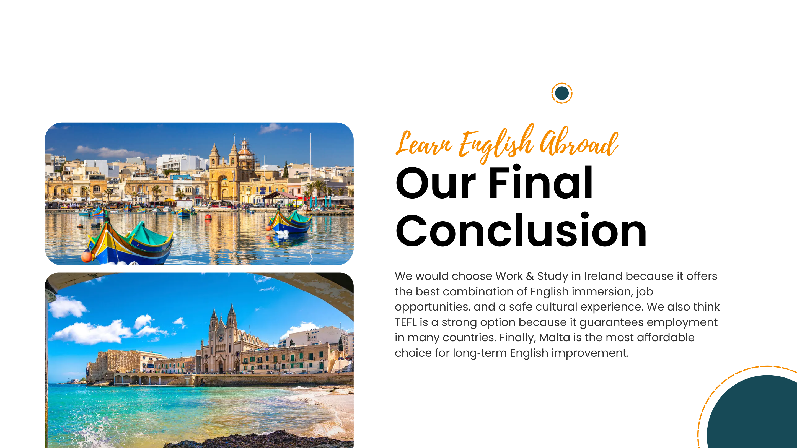

Going abroad is one of the most powerful ways to accelerate your English — through real immersion, real people, and real experiences that no classroom can replicate.
Work-exchange platforms let you travel and practise English at the same time — in exchange for a few hours of help per day, you get accommodation, meals, and full cultural immersion. We explored three of the best options.
Global platform for work-exchange in hostels, NGOs and eco-projects.
World Wide Opportunities on Organic Farms — ideal for sustainable living.
Global community for cultural exchange, volunteering and low-cost travel.
A full feature-by-feature breakdown to help you decide which platform suits you best.

What volunteers actually say about each platform — the good and the not so good.

Not every destination requires a large budget. These countries offer excellent English immersion at a fraction of the cost of traditional study-abroad programmes.
These qualifications open doors to employment in English-speaking countries around the world.


We would choose Work & Study in Ireland because it offers the best combination of English immersion, job opportunities and a safe cultural experience.
We also think TEFL certification is a strong option because it guarantees employment in many countries.
Finally, Malta is the most affordable choice for long-term English improvement.
View the original presentation
View Canva Presentation →